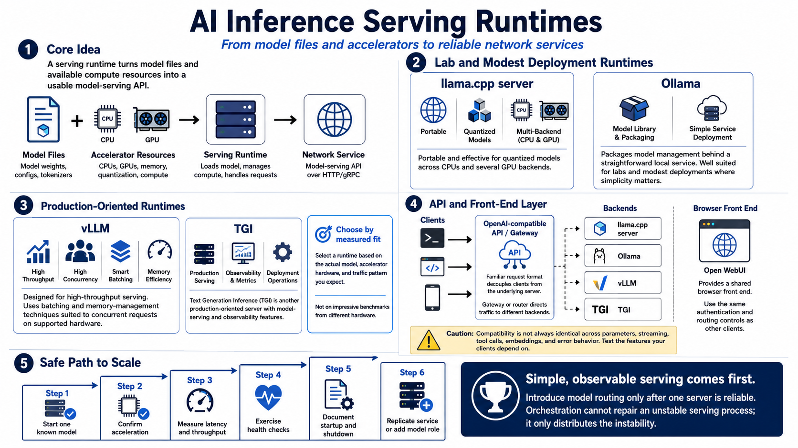

Model Serving and Runtime Options
Connecting to LMS... Progress: in progress

Narration
The serving runtime turns model files and accelerator resources into a network service. Llama.cpp server is portable and effective for quantized models across CPU and several GPU backends. Ollama packages model management behind a straightforward local service. These tools are useful for labs and modest deployments where operational simplicity matters more than maximizing concurrent throughput.
VLLM is designed for high-throughput language-model serving and includes memory-management and batching techniques suited to concurrent requests on supported hardware. Text Generation Inference, often called TGI, is another production-oriented server with model-serving and observability features. Their advantages appear only when models, accelerators, and traffic patterns are compatible. Benchmark the actual model and prompt distribution; do not select a runtime solely from an impressive result produced on different hardware.
An OpenAI-compatible API can decouple clients from the underlying server. Applications use a familiar request format while a gateway or router directs traffic to llama.cpp, Ollama, VLLM, or another backend. Compatibility is not always identical across parameters, streaming, tool calls, embeddings, and error behavior, so test the features your clients depend on. Open WebUI can provide a shared browser front end, but it should use the same authentication and routing controls as other clients.
Introduce model routing only after one server is reliable. Start a known model, confirm acceleration, measure latency and throughput, exercise health checks, and document startup and shutdown. Then replicate the service or add another model role. Complex orchestration cannot repair an unstable serving process; it only distributes the instability. A simple, observable serving layer is the foundation for safe scheduling and scale.